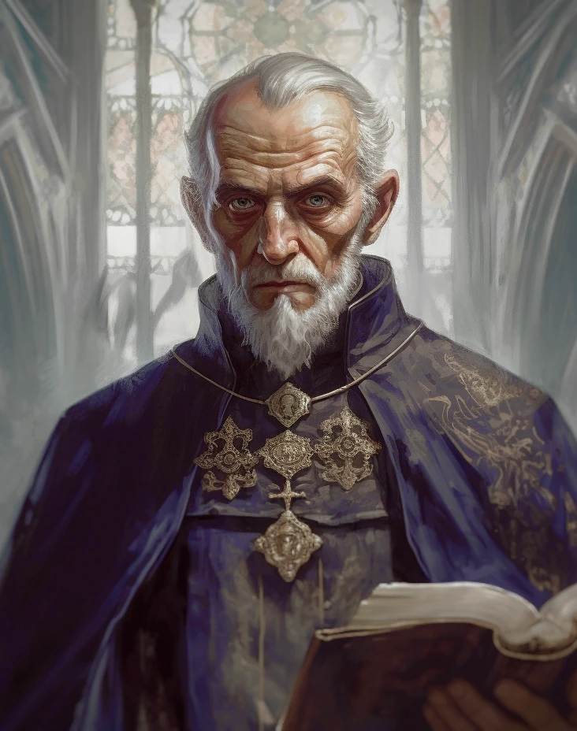

High Stamina
Gain an additional Stress slot at character creation.

Wizard Human Loreborne Level 5
Sing us a song of...
Gain an additional Stress slot at character creation.
When you fail a roll that utilized one of your Experiences, you can mark a Stress to reroll.
You have advantage on rolls that involve the history, culture, or politics of a prominent person or place.
Spend 3 Hope to force an adversary within Far range to reroll an attack or damage roll.
You can perform harmless, subtle magical effects at will. For example, you can change an object’s color, create a smell, light a candle, cause a tiny object to f loat, illuminate a room, or repair a small object.
Choose a number between 1 and 12. When you roll that number on a Duality Die, gain a Hope or clear a Stress.
You can change this number when you take a long rest.
Take an additional domain card of your level or lower from a domain you have access to.
When you Utilize an Experience, you can mark a Stress instead of spending a Hope. If you do, double your Experience modifier for that roll.
Take an additional domain card of your level or lower from a domain you have access to.
Once per rest, when you recall a domain card in your vault, you can reduce its Recall Cost by 1.
Take an additional domain card of your level or lower from a domain you have access to.
When you use an Experience, roll a d6. On a result of 5 or higher, you can use it without spending Hope.
Wild Flame: Make a Spellcast Roll against up to three adversaries within Melee range. Targets you succeed against take 2d6 magic damage and must mark a Stress as flames erupt from your hand.
Magic Hand: You conjure a magical hand with the same size and strength as your own within Far range.
Mysterious Mist: Make a Spellcast Roll (13) to cast a temporary thick fog that gathers in a stationary area within Very Close range. The fog heavily obscures this area and everything in it.
Runic Lock: Make a Spellcast Roll (15) on an object you’re touching that can close (such as a lock, chest, or box). Once per rest on a success, you can lock the object so it can only be opened by creatures of your choice. Someone with access to magic and an hour of time to study the spell can break it.
Arcane Door: When you have no adversaries within Melee range, make a Spellcast Roll (13). On a success, spend a Hope to create a portal from where you are to a point within Far range you can see. It closes once a creature has passed through it.
Reveal: Make a Spellcast Roll. If there is anything magically hidden within Close range the roll would succeed against, it is revealed.
Arcane Deflection: Once per long rest, spend a Hope to negate the damage of an attack targeting you or an ally within Very Close range.
Time Lock: Target an object within Far range. That object stops in time and space exactly where it is until your next rest. If a creature tries to move it, make a Spellcast Roll against them to maintain this spell.
Wall of Flame: Make a Spellcast Roll (15). On a success, create a temporary wall of magical flame between two points within Far range. All creatures in its path must choose a side to be on, and anything that subsequently passes through the wall takes 4d10+3 magic damage.
Mystic Tether: Make a Spellcast Roll against a target within Far range. On a success, they’re temporarily Restrained and must mark a Stress. If you target a flying creature, this spell grounds and temporarily Restrains them.
Fireball: Make a Spellcast Roll against a target within Very Far range. On a success, hurl a sphere of fire toward them that explodes on impact. The target and all creatures within Very Close range of them must make a Reaction Roll (13). Targets who fail take d20+5 magic damage using your Proficiency. Targets who succeed take half damage.
Levitation: Make a Spellcast Roll to temporarily lift a target you can see up into the air and move them within Close range of their original position.
Recant: Spend a Hope to force a target within Melee range to make a Reaction Roll (15). On a failure, they forget the last minute of your conversation.
Rune Circle: Mark a Stress to create a temporary magical circle on the ground where you stand. All adversaries within Melee range, or who enter Melee range, take 2d12+4 magic damage and are knocked back to Very Close range.
Slumber: Make a Spellcast Roll against a target within Very Close range. On a success, they’re Asleep until they take damage or the GM spends a Fear on their turn to clear this condition.
Arcane Barrage: Once per rest, spend any number of Hope and shoot magical projectiles that strike a target of your choice within Close range. Roll a number of d6s equal to the Hope spent and deal that much magic damage to the target.
Telepathy: Spend a Hope to open a line of mental communication with one target you can see. This connection lasts until your next rest or you cast Telepathy again.
Power Push: Make a Spellcast Roll against a target within Melee range. On a success, they’re knocked back to Far range and take d10+2 magic damage using your Proficiency.
Tava’s Armor: Spend a Hope to give a target you can touch a +1 bonus to their Armor Score until their next rest or you cast Tava’s Armor again.
Ice Spike: Make a Spellcast Roll (12) to summon a large ice spike within Far range. If you use it as a weapon, make the Spellcast Roll against the target’s Difficulty instead. On a success, deal d6 physical damage using your Proficiency.
Once per long rest, you can instantly teleport yourself and any number of willing targets within Close range to a place you’ve been before. Choose one of the following options, then make a Spellcast Roll (16):
On a success, you appear where you were intending to go. On a failure, you appear off course, with the range of failure determining how far off course.
Strength · Melee · 4d4 phy
The containers used to safely hold the fluid are bulky and take up your secondary weapon slot to carry. When using this item to make an improvised attack, roll with disadvantage.
Knowledge · Far · 4d6+4 mag
Reliable. +1 to attack rolls
Knowledge · Very Close · 4d20+4 mag
Painful. Each time you make a successful attack, you must mark a Stress.
Thresholds 11/23 · Armor Score 5
Hopeful. When you would spend a Hope, you can mark an Armor Slot instead.
This item represents enough rations to feed a character for a few days. So long as a character has this item on them when they travel, they do not suffer from the effects of hunger or thirst. If a character does not have this item on their person during a long rest taken as part of a travel narrative, they may not take the clear stress downtime action. Generally speaking, a character does not need to carry multiple uses of this item. Each item represents multiple servings of foodstuff. After a long rest, however, a GM may spend a Fear in order to force a character to make an Instinct Roll with a difficulty based on the terrain. On a failure, the character runs out of rations and must consume this item.
Milestones House Rule
Clear 1d4 Stress.
Clear 1d4 HP.
As a downtime move, you can use the bone of a creature to craft a Minor Stamina Potion.
As a downtime move, you can mark a Stress to craft a Vial of Darksmoke.
Vial of Darksmoke
During downtime, you automatically clear a Stress.
Worth about the equivalent of one bag of coins in goods…
He/Him Age 59
The line of Gial is supposed to maintain the pre-Umbrian art of infusing the Schnaps with the powers of healing and restoration, but that knowlege was lost when Gial IV. died before Gial V. mastered those infusions. Instead he had wasted too much time in searching for the mythic knowledge of The Last Professor, Gial (you don't number the original, in hindsight you do, so Gial I.), once it was the search for power, now, having let his people down, it is about redemption. The master of the distillery is a powerful rival, always reminding the community and Gial V., that it is Gial's fault that the Schnaps' powers have diminished as much as they did -- not his fault (Gial expects that maybe the slow corruption of the Umbra played a part and it is not completely his fault that he lost the powers of the highly distilled spirits. But he would not tell anyone before he has any proof—better to be guilty than being guilty and denying it, too.
To Talokai: "If I don't make it, make sure this tome handed down through the generations of my family finds someone, not of the Grand Ordinates, who understands it. Find some Aetherweaver or Lorekeeper who... understands."
Talokai's Response: “If it comes to that I will see it done. No Ordinates. No careless hands. Whoever takes it will understand—and honor it. You have my word.”
An unofficial fan site for a private Daggerheart campaign.